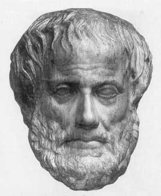
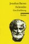
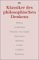

Aristoteles

384 v. Chr. Stageira bis 322 v. Chr. Chalkis auf Euböa
Aristoteles war nicht eigentlich Mathematiker, sondern neben Platon der grösste altgriechische Philosoph. Er
studierte bei Platon, ohne eigentlich dessen Schüler zu werden. Er war Erzieher von Alexander des Grossen. In Athen gründete er 335 die
sog. "Peripatetische Schule. (nach einem Peripatos, d.h. Wandelgang, wo er lehrte); nach Alexanders Tod der
Gottlosigkeit angeklagt, floh er 323/22 v. Chr. nach Chalkis.
Aristoteles ist der Begründer der eigentlich wissenschaftlichen Philosophie und philosophiedurchleuchteten (Einzel-) Wissenschaft; wohl wirkungsmächtigster aller Philosophen, die bisher gelebt haben.
Seine Grundlagen sind Logik und Metaphysik. Die Logik, deren Schöpfer Aristoteles ist und die er "Analytik" nennt, ist die Lehre von den logischen Grundgesetzen, von Begriff, Urteil, Schluss, von Definition, Beweis sowie setzender bzw. widerlegender Methode, niedergelegt in den sechs Schriften seines "Organon".
Die Kategorienlehre (Substanz, Beziehung, Raum, Zeit, Qualität, Quantität, Tun, Leiden, Haltung, Lage) steht auf der Grenze zwischen Logik und Metaphysik.
Aristoteles ist der Begründer der eigentlich wissenschaftlichen Philosophie und philosophiedurchleuchteten (Einzel-) Wissenschaft; wohl wirkungsmächtigster aller Philosophen, die bisher gelebt haben.
Seine Grundlagen sind Logik und Metaphysik. Die Logik, deren Schöpfer Aristoteles ist und die er "Analytik" nennt, ist die Lehre von den logischen Grundgesetzen, von Begriff, Urteil, Schluss, von Definition, Beweis sowie setzender bzw. widerlegender Methode, niedergelegt in den sechs Schriften seines "Organon".
Die Kategorienlehre (Substanz, Beziehung, Raum, Zeit, Qualität, Quantität, Tun, Leiden, Haltung, Lage) steht auf der Grenze zwischen Logik und Metaphysik.
Ausführliche Informationen zum Werk von Aristoteles finden Sie in der pdf-Datei unter http://www.antike-griechische.de/Aristoteles.pdf.


Aristoteles
Jonathan Barnes
Klassiker des philosophischen Denkens
Norbert Hoerster